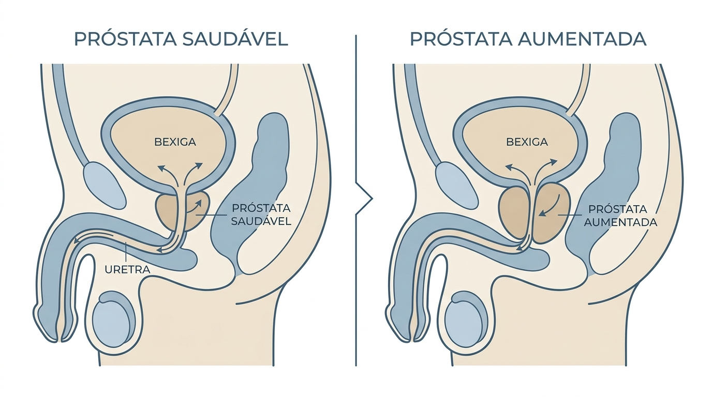
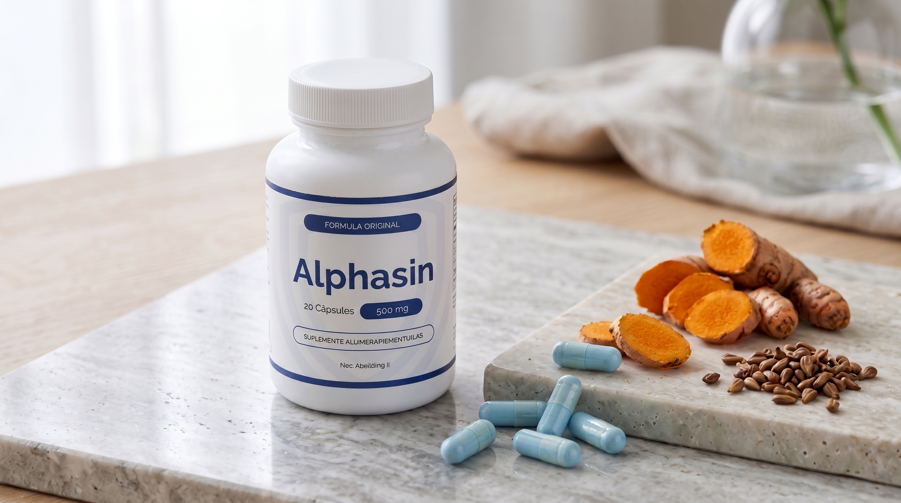
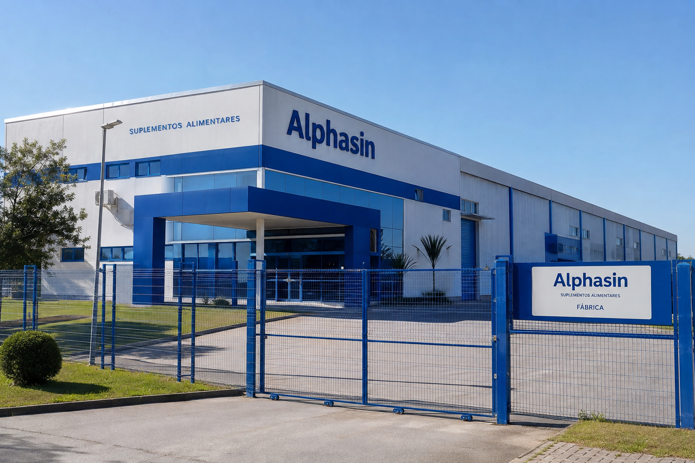

Se você tem mais de 45 anos, é bem provável que conheça de perto este ciclo exaustivo: você deita cansado após um dia longo, mas seu sono é interrompido às 2h da manhã, depois às 4h e novamente antes do despertador, sempre com aquela necessidade urgente de ir ao banheiro.
Ao chegar lá, a frustração é quase imediata: o fluxo urinário se mostra fraco, demorado, interrompido e, pior de tudo, com aquela nítida sensação de que a bexiga continua cheia.
Com o passar das semanas, a privação de sono cobra seu preço: irritabilidade constante, falta de concentração no trabalho, fadiga muscular e uma perda gradativa na disposição física e na vitalidade que abala profundamente a autoconfiança de qualquer homem.
FATO CIENTÍFICO O Mito do Desconforto Inevitável
Muitos homens acreditam que acordar à noite e perder a força do jato é um destino obrigatório da idade. A ciência atual comprova: o verdadeiro culpado é o estresse oxidativo celular que comprime a uretra e inflama a glândula prostática silenciosamente ao longo dos anos.
A Causa Biológica: Por que a Próstata Incha?
A próstata envolve diretamente a uretra — o conduto que drena a urina para fora do corpo. Com a oxidação celular contínua e a perda gradual de nutrientes essenciais, os tecidos da próstata sofrem pequenas inflamações microscópicas.
Com o inchaço, ela passa a exercer uma pressão física contínua sobre a passagem urinária — exatamente como alguém pisando em uma mangueira de jardim. O fluxo fica interrompido e a bexiga não consegue esvaziar por completo.

A Solução Sinergética: Como Funciona a Fórmula do Alphasin
Após testes laboratoriais focados em biodisponibilidade celular, especialistas reuniram 7 bioativos naturais em uma proporção exata, batizada de Alphasin.

Procedência e Rigor Técnico Autorizado
Supervisão química e normas sanitárias em conformidade
- • Responsável Técnico Químico: Mário Henrique Nunes Peres (CRQ: 02200413)
- • Notificação Sanitária: Isento de registro em conformidade com a RDC 240/2018 da ANVISA
- • Distribuição & Operação: ROGERIO OLIVEIRA DA SILVA (CNPJ: 62.471.607/0001-07)
- • Modo de Uso: Apenas 1 cápsula ao dia pela manhã com água.
Ação Inédita: Pagamento Realizado Apenas no Ato da Entrega
Muitos homens com mais de 50 anos evitam comprar pela internet por receio de golpes, cartões clonados ou encomendas que nunca chegam à porta de casa.
Para assegurar total tranquilidade ao público, a distribuidora oficial do Alphasin implementou no Brasil a modalidade de Pagamento na Entrega (Pay After Delivery).

Como funciona a sua segurança garantida:
- 1 Consulta pelo WhatsApp: Você clica no botão abaixo e é atendido diretamente pela central de distribuição para informar seu CEP.
- 2 Envio Discreto: O produto é despachado em embalagem neutra (sem qualquer menção íntima no exterior).
- 3 Pagamento no Portão: Você só paga quando o entregador estiver com o pacote na sua mão (via Pix, dinheiro ou cartão). Risco financeiro zero.
Verificar Cobertura de Entrega no WhatsApp
Tire suas dúvidas técnicas com um atendente autorizado e agende seu pedido para pagar somente quando a encomenda chegar.
CONSULTAR MEU CEP NO WHATSAPP